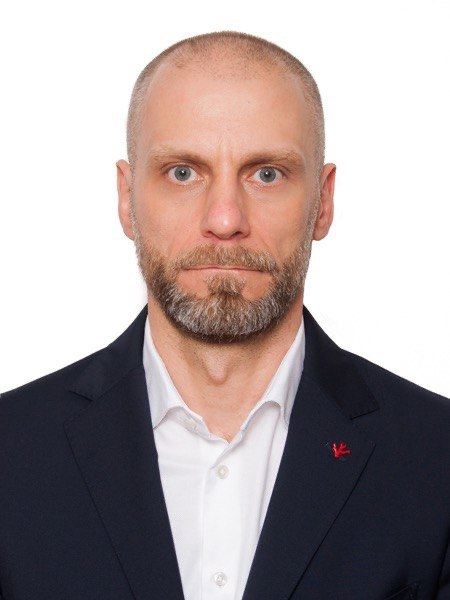

SENIOR BACKEND / FULL-STACK DEVELOPER
Complex
problems.
Elegant systems.
I turn ambitious ideas into thoughtful web applications — connecting reliable backends, useful AI, and the people who use them.

engineering experience
with real purpose
Open-source minded.
01 / SELECTED WORK
Less theory.
More building.
Legal research. Human connection. Accessible communication. Different challenges, the same care for what happens under the hood.
Built as portfolio and open-source projects. Explore each case for scope, architecture and availability.
02 / HOW I CAN HELP
Good systems.
No loose ends.
From the first data model to the last deployment detail. Backend depth, with a full-stack perspective.
01Backend & architecture
+
Structured applications, well-defined APIs and data models that make sense. Authentication, roles and background processing built into the architecture.
02AI that does useful work
+
Retrieval pipelines, vector search and local inference connected to real product workflows — from legal research to content moderation and voice assistants.
03Full-stack & real-time
+
Responsive interfaces, real-time communication and interactive experiences. Connecting what people see to the engineering that makes it possible.
04Deployment & privacy
+
Containerized applications, background workers and privacy-conscious data flows. Local AI where it matters, with attention to GDPR and Swiss FADP principles.
BUILDER.
HUMAN.
03 / THE PERSON BEHIND THE CODE
Hi, I'm Andrii.
I like making
things work.
I'm a Senior Backend / Full-Stack Developer with over a decade of experience building web applications. My focus is Python, Django, Node.js — and putting AI to practical use.
The projects I care about bring technology closer to people: helping someone find information, join a community, preserve a memory or communicate.
04 / LET'S BUILD SOMETHING THAT MATTERS
Open to a good conversationA project, a role, or just a hello?
denisov20051985@gmail.com